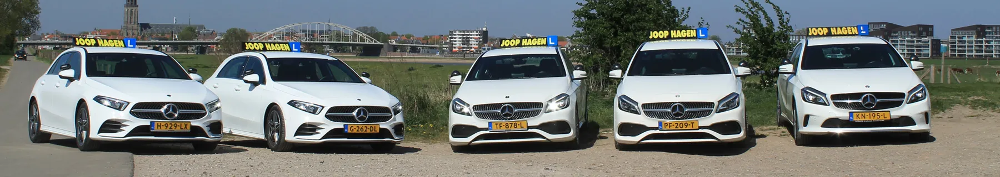

Hoge slagingspercentages
Onze leerlingen halen bovengemiddeld vaak in één keer hun rijbewijs.
Compacte, praktijkgerichte theoriecursussen die je goed voorbereiden op het CBR-theorie-examen.

Onze eigen lesauto's aan de IJssel.
Onze leerlingen halen bovengemiddeld vaak in één keer hun rijbewijs.
Compacte, praktijkgerichte theoriecursussen die je goed voorbereiden op het CBR-theorie-examen.
Je doorloopt je hele opleiding bij dezelfde instructeur, die jouw tempo en leerpunten kent.
Leer je liever in een ander tempo? We kijken graag met je mee.
Je leert rijden in actuele modellen, uitgerust met de laatste veiligheidsvoorzieningen.
Spreid de kosten van je rijopleiding in overleg, zonder verrassingen achteraf.
Vestiging aan de Hunneperkade in Deventer, ook open op zaterdag.
"Prima begeleiding bij het C/CE-rijbewijs, de instructeurs kennen hun vak en letten op detail."
"Mijn rijbewijs C gehaald dankzij duidelijke uitleg en een instructeur die goed uitlegt."
"Persoonlijke aanpak en een fijne sfeer tijdens de lessen. Zou de school zeker aanraden."